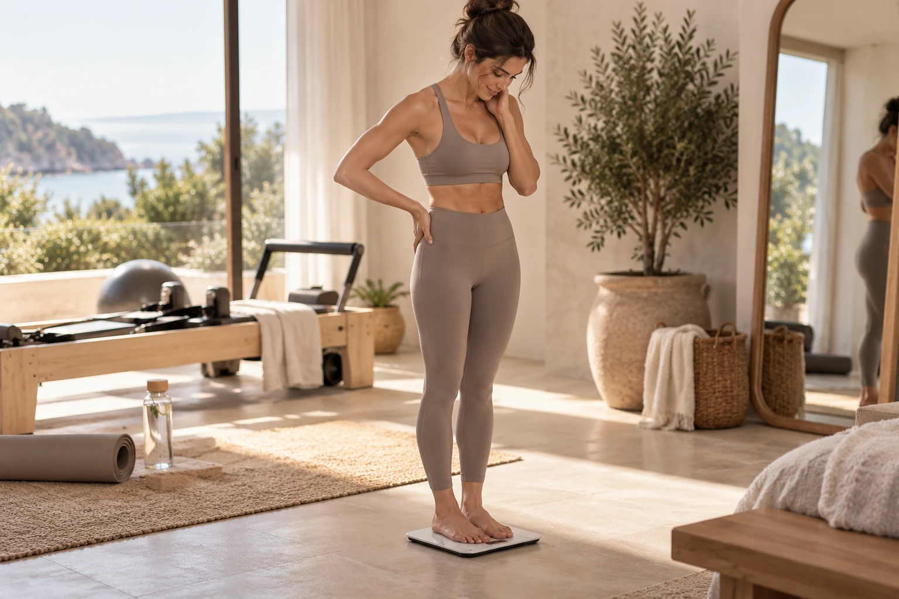
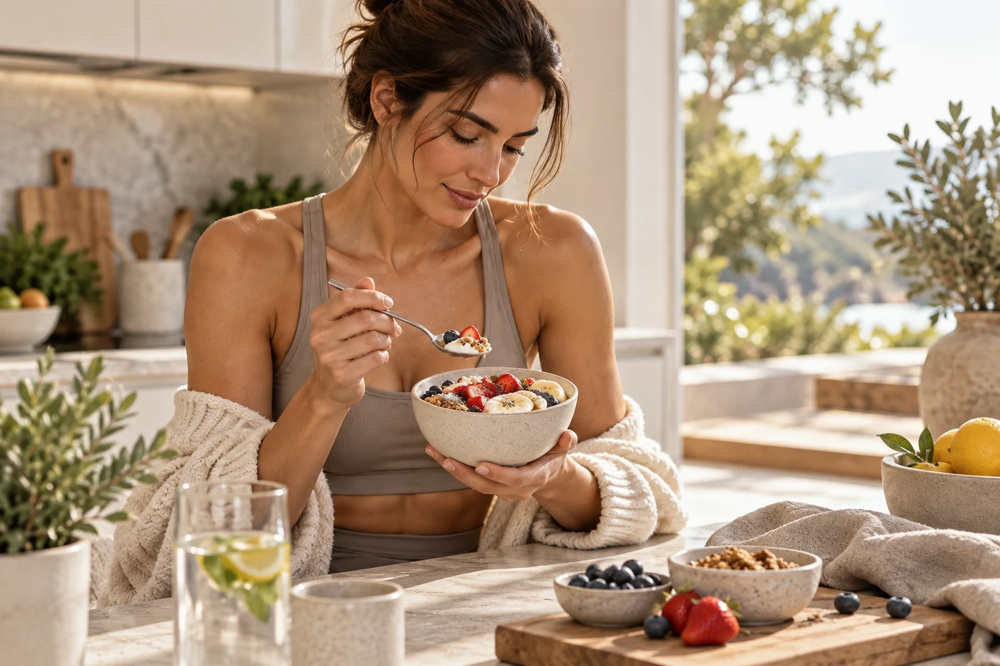

You start moving with more control
Pilates teaches you to organize movement instead of just completing repetitions. You learn where your ribs, pelvis, shoulders, and spine are while you move, which can make everyday actions feel more deliberate and less sloppy.
That control is why people often say they feel different before they look different. You may notice better balance, smoother transitions, and more confidence in movements that used to feel unstable.
Your core becomes more useful
Core work in Pilates is not only about crunches. The trunk has to support the spine while the arms and legs move, resist unwanted rotation, and manage changes in position. That makes the work feel practical, not just cosmetic.
Over time, you may feel stronger during planks, standing exercises, lifting, carrying, and other activities where your body needs to stay organized while something else moves.

Posture can look different because support improves
Pilates does not magically create perfect posture, but strengthening the muscles that help control the pelvis, spine, and shoulder blades can make it easier to stand and sit with less collapsing.
You may also become more aware of habits such as locking the knees, lifting the shoulders, or arching the lower back. Awareness gives you the chance to adjust those patterns instead of repeating them automatically.
Mobility and strength start working together
Flexibility by itself is not the same as control. Pilates often asks you to move through range while maintaining stability, which can help you feel both more open and more supported.
That combination is useful because the goal is not simply to move farther. The goal is to own the range you have and gradually build more if your body tolerates it well.
What about visible definition
Pilates can contribute to muscular definition, especially when you train consistently and progress the challenge. Visible changes still depend on genetics, overall activity, food intake, stress, sleep, and body composition.
It is more realistic to think of Pilates as one strong part of a larger routine. The body changes because of repeated habits over time, not because of one special movement or class format.
This article is general educational information, not individualized medical advice. If pain, injury, pregnancy, or a health condition affects your movement, speak with a qualified healthcare professional.